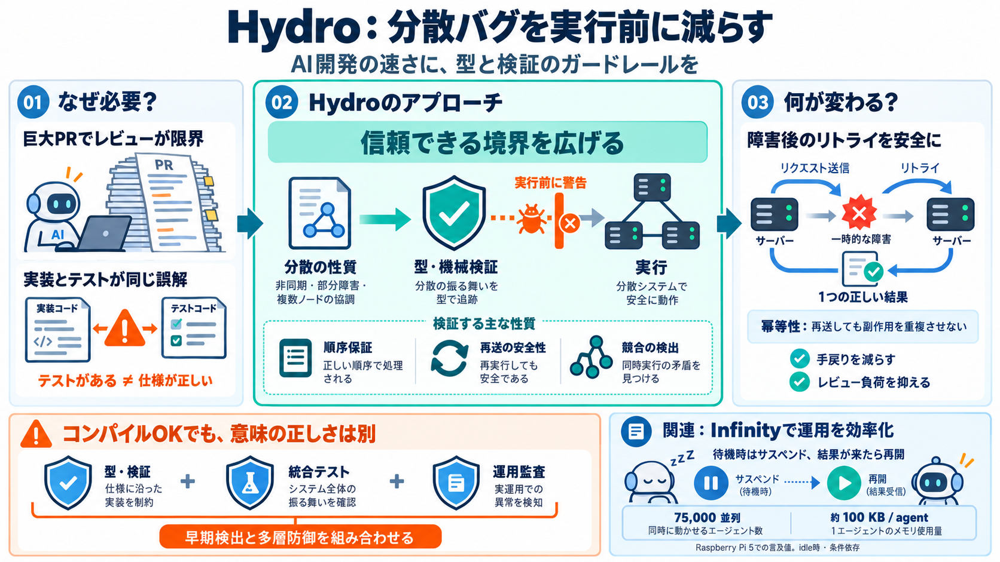

AWS’s Hydro team wants the compiler to catch coding...
checker catches race conditions. The same team built Infinity, an agent runtime that suspends idle agents, with a benchm…

checker catches race conditions. The same team built Infinity, an agent runtime that suspends idle agents, with a benchm…
The same team also built Infinity, an open-source agent runtime AWS announced on October 23. It suspends an agent while …
# AWS's Hydro team wants the compiler to catch coding agents' mistakes ## Channel: The New Stack 9.99K subscribers 3 lik…
Today, we’re releasing Infinity under the Apache 2.0 open source license as part of the Hydro project, a collaborative e…
## Hydro catches distributed bugs at compile time Hydro encodes distributed behavior in the type system, end-to-end: ev…